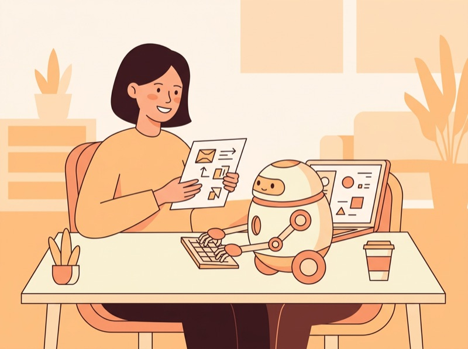

📱 スマホで開く
教室の画面を見ながら、自分のスマートフォンで、このページを開けます。スマートフォンのカメラで、このQRコードを読み取ってください。QRコードを押すと、大きく表示されます。
テーマ
授業の冒頭に、AIを使って作るときの考え方の参考を聞き、前回の発表の感想と卒業進級制作（個人制作）の困りごとを、チームで相談しながらアンケートに書く。先生が読み上げて、困りごとにその場で答える。そのあとは、各自が並行して取り組む進級制作（または個人開発の延長）を進めるワークの時間にする。AIエージェント（agyまたはAI Studio Build mode）をどこに活かせるかは、ワークの中で考える
キーワード
進級制作 / 個人開発の延長 / 計画して、確かめるのは人 / アンケート（チームで相談・先生が読み上げ） / ワーク / 困ったときの道具（AIを活かす場所の4つの型・次の一歩のメモ・計画だけ出させる）
必要な準備
前回（第8回）の発表を思い出せること（資料や、聞いたときのメモがあれば手元に）。進級制作、または続けたい個人開発のリポジトリを開けること。agyが動くCodespacesか、AI Studio。アンケートは、先生がClassroomで案内します。回答は、先生が読み上げます（学生が発表する時間ではありません）。
この回のゴール
- AIを使って作るときに、計画して、確かめるのは人だという考え方を、自分の言葉で言える
- 前回の発表の感想と、卒業進級制作（個人制作）で今困っていることを、チームで相談しながらアンケートで伝えられる
- 自分の作品（進級制作か個人開発の延長）を、今日のワークの時間で1つ前に進められる
- 困ったときに、チーム・先生・AIのどれに頼るかを選べる
今日の優先順位: 進み具合は人それぞれで構いません。進んでいる人も、これからの人も、ワークの時間で「次に進めたい1つ」を決めて、進めて帰ることが目標です。
授業の流れ
2コマ連続（90分 + 90分 = 計180分）。途中休憩あり。
1限 前半
約40分
参考になる話を聞き、アンケートで困りごとを出す
今日の流れ：聞いて、出して、作品を進める
① 参考になる話：プロは、雰囲気で全部を任せない（約10分）
AIを使って作るときの、人の役目
- 先に計画するAIに頼む前に、何を作るか、どこまでやるかを、自分で考える

AIに任せる下書き、調べもの、手間のかかる作業を、AIに頼む- 人が確かめる出てきたものを読んで、動かして、使うかどうかを人が決める
- 研究論文「Professional Software Developers Don't Vibe, They Control: AI Agent Use for Coding in 2025」（arXiv。2025-12-16に投稿、いま読めるのは2026-08-18の改訂版v2。主にCornell大学とUC San Diegoの研究者）の話。経験のある開発者について、13人への現場の観察と、99人へのアンケートをした研究
- 論文の要旨（原文）: "while experienced developers value agents as a productivity boost, they retain their agency in software design and implementation out of insistence on fundamental software quality attributes, employing strategies for controlling agent behavior leveraging their expertise."（経験者はAIを生産性の助けとして評価するが、ソフトウェアの品質を大事にするので、設計と実装の主導権は手放さず、自分の経験を使ってAIの動きを制御している）
- 論文の本文でも、経験者は "they plan before implementing and validate all agentic outputs"（実装の前に計画し、AIの出力はすべて確かめる）と報告されている（RQ2。要旨ではなく本文）。プロもAIを使っている。ちがいは、先に計画し、出てきたものを人が確かめること。授業では、これを第8回までの「AIは下書き、人が判断」と同じ考え方として受け取る
- 注意: この研究の対象は経験のある開発者で、授業の学生とは立場がちがいます。就職に役立つかどうかは、この論文は扱っていません。ここで受け取るのは、「AIで作るときは、計画と確かめるところを人が持つ」という考え方の参考です
- 隣の人と1分: 自分の作品で、「ここは人が確かめたい」と思うところは、どこか
② アンケートを、チームで相談しながら書く（約10分）
- 先生がClassroomで案内するGoogleフォームのアンケートに答える（フォームの場所と答え方は、先生の案内に従う）
- チームは、第8回のチームのままで構いません（近くの2〜3人に組み直してもよい。先生の指示に従う）。チームで相談しながら書く。答え方の単位（一人ひとりか、チームか）は、先生の案内に従う
- 前回の発表のうち、書きたいものを1つ選ぶ。自分のチームの発表でも、他のチームの発表でもよい。思い出せない人は、前回の資料や、聞いたときのメモを開く。チームの人に聞いてもよい
- 質問は、たとえば次のようなものです（実際の質問は、先生のフォームに従う）:
- 選んだ発表は、自分のチームか、他のチームか（チーム名）
- その発表で、よかったところを1つ
- もっと知りたかったことを1つ
- 自分の作品にも取り入れてみたい工夫を1つ
- 卒業進級制作（個人制作）で、今困っていることを1つ（特になければ「特になし」でよい）
書くのは、感想・工夫・困りごとだけ。個人情報（住所・電話番号など）や、人を責める言い方は書きません。
③ 先生が回答を読み上げる（約10分）
- 学生が発表する時間ではありません。先生が集まった回答を読み上げる。聞く人は、「それは、自分の作品にも使えそう」と思ったところに一言メモする
- 困りごとは、同じ困りごとの人がいることに気づくために聞く。責めずに、知りたい気持ちで聞く
④ 先生が、困りごとに答える（約10分）
- 読み上げた困りごとのうち、多くの人に関わるものから、先生がその場で答える（全部には、この時間では答えきれません）
- 答えきれなかったもの、自分だけのものは、ワークの時間に先生が席をまわって聞く。自分から先生を呼んでもよい
1限 後半
約50分
ワーク①：自分の作品を進める
① 続ける作品を選び、今日進めることを決める（約10分）
どちらで進めてもよい
- A 卒業進級制作: すでに動いている部分がある人。AIエージェントを、その作品のどこに足すかを考える
- B 個人制作（個人開発の延長）: 進級制作がまだ形になっていない人、またはこの授業で作ったアプリを育てたい人。第6〜8回のアプリなどを、続きとして伸ばす
- 選んだら、作品の名前と、リポジトリの場所（または AI Studio のアプリ）をメモする。選べない人は先生に相談する
- 今日のワークで進めたいことを1つ決めて、メモする（大きすぎるときは、半分に割る）
② ワーク（約40分）
- 自分の作品を進める。AIエージェントに頼むときは、先に何をしてほしいか、どこまでやるかを言葉にしてから頼み、出てきたものは人が読んで、動かして確かめる（冒頭の話と同じ）
- 困ったときの頼り先: ①まずチームの人に聞く ②それでも分からなければ先生を呼ぶ（先生が席をまわります） ③AIに頼むときは、下の「困ったときの道具」を使ってもよい
- うまく進まなくても大丈夫。どこで止まったかを一言メモしておけば、それがそのまま次回の出発点になる
休憩
10分
2限 前半
約50分
ワーク②：困ったときの道具を使いながら進める
① 困ったときの道具（使いたい人が使う）（約10分）
- どれも必須ではありません。作品が進んでいる人は、そのままワークを続けてください。迷ったときの助けとして、折りたたんで置いてあります
道具1: AIを活かす場所を、4つに分けて考える
AIを活かす場所：4つの型
- 困りごとが、4つのどれかに当てはまるか考える。複数にまたがってもよい
- それぞれに、AIに任せてよいことと、人が決めること（何を作るか・事実の点検・最後の判断）を1つずつ書く
道具2: 次の一歩のメモを作り、AIに「計画だけ」出させて、人が直す
次の一歩のメモ：足す・やらない・確かめる
- 足すことは1つだけ。「やらないこと」を決めると、AIが勝手に広げるのを防げる
- できたかの見かたは、「見て分かること」で書く（画面にこう出る、押すとこうなる）
- agy:
/planで、ファイルを変える前に計画を出してもらえる。公式: "The agent reads files ... without writing code prematurely."（探索のあいだ、コードは書かれない）。計画は画面で読んで、直しを言葉で頼み、OKを出してから進む（公式: "leave inline comments, request adjustments, or click Proceed"）。切り替えはShift+Tabでも行える（公式: antigravity.google/docs/cli/reference のキー操作一覧） - AI Studio Build mode: 公式の説明ページには、Planモードの記述は見つからなかった。教員の画面にはPlan（Default／Plan／Maxのスライダー）があると確認している（第6回）が、自分の画面にあるかは未確認。なければ、指示に「実行せず、計画だけを出してください」と書いて頼む
- 頼み方の例（どちらでも）:
この作品に「（足すこと）」を1つ足したい。ファイルは変えず、計画だけ出してください。やらないことと、できたかの見かたも書いてください。
AIの計画を、人が3点で点検する
- 出てきた計画を、上の3点で読む。直したい所を言葉で頼んで、計画を直してもらう。直した計画から、自分のメモ（足すこと・やらないこと・できたかの見かた）に写す
- うまく出ない人は、先に自分でメモを書いて、AIに「この計画の抜けや危ない所を教えて」と頼む（人の計画をAIが点検する形）
進級制作のリポジトリを、AI Studioに直接取り込まない。取り込むと、AI Studio向けに書き直されたコピーができ、GitHubへ送り返す（Force push）と、mainがその形に置き換わります（第7回）。AI Studioで試したいときは、コピー（別のリポジトリ）を取って、そのコピーを使います。別のブランチを取るだけでは、AI Studioが送る先（main）を守れるか確かめていないので、ブランチのコピーは使いません。進級制作の中身を変えるときは、agyで、元のリポジトリのブランチ上で行うのが安全です。
② ワーク（約40分）
- 1限のつづきを進める。先生が席をまわるので、困りごとはその場で聞く
- 1つ終わったら、人の目で確かめる（動かす、画面で見る）。AIが「できた」と言っても、確かめるのは人
2限 後半
約30分
ワーク③と、今日の成果を残す
- ワーク（約20分）: つづきを進める。区切りのいいところで手を止める
- 今日の成果を残す（約10分）: どこまで進んだか、次にやることを、自分のリポジトリのメモ（
NOTES.mdなど）か、手元のメモに書く。進んだ分は、コミット・プッシュしておく（やり方が分からない人は先生へ） - 次回の準備を確かめる: 作品の場所（リポジトリ・アプリ）を、次回も開けるか。agyが動くか。動かない人は今のうちに先生へ
進まなくても大丈夫。「いちばん困っていること」を1つ書いておけば、次回はそこから始められます。
まとめ
約10分
今日進めたことを確かめ、次回を知る
- 先生のひとこと（約3分）: 今日のアンケートで出た困りごとを、次回以降にどう扱うか
- 一言メモ（約4分）: 今日AIに任せたことと、自分で決めた・確かめたことを、一言ずつ
- 次回（第10回、約1分）：進級制作に小さな改善を加える①——今日のつづきとして、進級制作（または個人開発の延長）に小さな改善を1つ実装する。冒頭に、第9回の論文のつづきとして、プロンプトからループへの考え方を説明し、アンケートで多かった困りごと（AIへの頼み方、コードの理解）も短く扱う（授業計画一覧）
- 成果のメモが残っているか、最後に確かめて退出（約2分）
課題・次回までにやること
必須
今日の成果を、次回すぐ使える場所に残しておく
どこまで進んだか、次にやること。リポジトリのNOTES.mdか、手元のメモでよい。次回の最初に開きます。
推奨
作品の現状を、画面のスクリーンショット1枚で残す
次回の「変える前」と「変えた後」を見比べるために使います。個人情報・APIキー・.envの中身が映らないようにします。
参考リンク
- Professional Software Developers Don't Vibe, They Control: AI Agent Use for Coding in 2025（arXiv） — 冒頭の話の論文（2025-12-16投稿、改訂版v2は2026-08-18、確認日 2026-11-12）
- Plan (/plan)（Antigravity公式） — 計画だけ出させる、質問の画面、計画の承認
- Build apps in Google AI Studio（Google公式） — Build modeの説明（Planモードの記述は見つからなかった）
- 第7回 Google AI Studio Build modeで仕上げよう②（本サイト） — 進級制作を直接取り込まない理由、コピーの取り方
- 第8回 中間共有会（本サイト） — 「AIは下書き、人が判断」の線引き